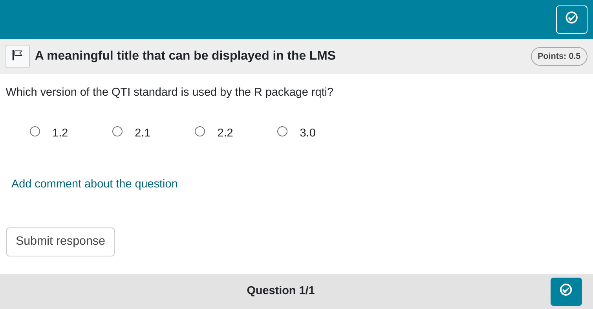

Minimum version
The simplest exercise type in the qti package is single choice. A
template is available in RStudio when you click on
New file -> R Markdown -> From Template. The qti
templates start with QTI. Here we look at the templates
QTI: singlechoice (simple) and
QTI: singlechoice (complex).
The minimum you need to provide is the type: sc (or the
equivalent type: singlechoice) in the yaml-section and a
list with at least two elements in a section called #
question:
---
type: sc
knit: qti::render_qtijs
---
# question
Which version of the QTI standard is used by the R package qti?
- 2.1
- 1.2
- 3.0
- 2.2
# feedback
The used qti version is 2.1.Note that in this example, a feedback section was also provided. This is optional, but usually it is a good idea to give some explanation for students.
Further note that the knit parameter is set to a custom
qti function, which will handle the preview. This is not necessarily
required, but simplifies the workflow substantially. If you leave it
out, the default preview is just an html file. If you add our knit
function, you will get a more realistic preview.
To see what the final result might look like in a learning management
system you can just click the Knit button in RStudio. This
will produce a qti xml file and render it in the viewer pane via QTIJS
(you can also just fire up the displayed server url in the browser).
Preview of single choice exercise rendered by QTIJS
The corresponding xml file is created in the same folder as the Rmd file if you click the Knit-Button.
Most learning management systems can directly import a QTI-xml-file, so all you need to do is upload the generated file. Compositions of exercises are covered in the article: sections and tests.
If you happen to use OPAL/ONYX, you can also upload your exercises with the knit parameter directly:
knit: render_opalThis will upload the file and open a browser with the opal url. It should look like this:

Setting up OPAL requires some additional steps, which are covered in the article: Setting up OPAL.
By default the rights of the uploaded material in OPAL are set to public, so no authentication is required to view the material. Otherwise you have to login into OPAL, which will log you out in the API. Please take this into account when testing your material. Without changing the defaults anyone with the link has access to your questions.
Syntax explained
Let us have a closer look at the input file.
---
type: sc
knit: qti::render_qtijs
---
# question
Which version of the QTI standard is used by the R package qti?
- 2.1
- 1.2
- 3.0
- 2.2
# feedback
The used qti version is 2.1.Note that you do not necessarily need to specify which list element is correct. The first one is treated as the correct one, which is a useful shortcut. If you communicate this to your collaborators, it is also much easier to read. They do not need to look anywhere else in the file for checking the correct answer.
Of course you can specify the correct choice if need be. Our preferred way of doing this is by putting asterisks around this option:
---
type: sc
knit: qti::render_qtijs
---
# question
Which version of the QTI standard is used by the R package qti?
- 1.2
- *2.1*
- 3.0
- 2.2Once again, this is much easier to read than providing the solution somewhere else (e.g. in the yaml section). Furthermore, producing a preview as html directly shows you which element is correct.
An important note: Do not forget to put a blank line before your question and the answer list, otherwise the list will not be a proper list:
A question text that is not separated by a blank line
- 1.2
- 2.1
- 3.0
- 2.2Renders as:
A question text that is not separated by a blank line - 1.2 - 2.1 - 3.0 - 2.2
More control
If you want to have more fine-grained control, consider the RMD
template QTI: singlechoice-complex, wich uses many yaml
attributes. In addition you can also set feedback for correct and
incorrect responses.
---
type: sc # equivalent to singlechoice and schoice
knit: qti::render_opal # if you do not want our preview renderer, remove this
identifier: TOPIC1_Q001 # think twice about this id for later data analysis!
title: A meaningful title that can be displayed in the LMS
shuffle: false # random order of choices
orientation: horizontal # OR horizontal
points: 0.5
---
# question
Which version of the QTI standard is used by the R package qti?
- 1.2
- *2.1* <!--Mark correct solution with asterisks-->
- 2.2
- 3.0
# feedback+
Nice. (Only displayed when the solution is correct.)
# feedback-
Try again. (Only displayed if the solution is not correct.)
<!-- If you prefer general feedback, just use the the section # feedback and delete the other feedback sections-->Which renders in OPAL as:

Let us now discuss all yaml attributes that can be used
yaml attributes
type
Has to be singlechoice or sc (a shortcut
for singlechoice) or schoice (compatible with
exams package)
identifier
This is the id of the exercise, useful for later data analysis of results. The default is the file name. If you are doing extensive data analysis later on, it makes sense to specify a meaningful identifier. In all other cases, the file name should be fine.
title
Title of the exercise. Can be displayed to students depending on the learning management system settings. Default is the file name.
Feedback
Feedback can be provided with the section
- # feedback (general feedback, displayed every time, without conditions)
- # feedback+ (only provided if student reaches all points)
- # feedback- (only provided if student does not reach all points)
We are generally not fans of conditional feedback. Usually, it will be better to present the whole solution but group it into chunks that can be opened and closed (e.g. html-element details and summary).
List of answers as a variable
For more complex exercises the list of answers is often just
available as a variable. In this case you can use the helper function
mdlist to convert the vector into a markdown list:
mdlist(c(1.2, 2.1, 2.2, 3.0), solutions = 2)
[1] "- 1.2\n- *2.1*\n- 2.2\n- 3"Some advice on single choice exercises
From a psychometric perspective single choice exercises are the worst option for ability assessment. This is mainly because guessing can never be ruled out. Psychometric properties will usually be worse than for gap exercises that are similar in content.
In the exams package you will see many examples where
numeric gaps are transformed into single choice exercises. In our
opinion, this only makes sense if the learning management system does
not support gap exercises, the support is poor or a print exam with
automatic grading is a strict requirement. Otherwise, most exercises
will be better with numeric (or string) gaps.
There are situations where single choice exercises cannot be avoided. For instance, exercises regarding the level of measurement only have five choices (nominal, ordinal, interval, ratio, absolute). In this case we recommend to ask several questions, not just one. Also, you might want to give less points to single choice exercises in general to reduce the variance caused by guessing.
If you have several single choice exercises where the answer options stay the same, consider using a match table instead: Match Tables
In summary, try to avoid single choice exercises. Specifically, do not transform numeric gap exercises to single choice exercises, unless you have a good reason. If you cannot avoid single choice exercises, ask several questions (with a match table), not just one. Consider giving less weight to single choice exercises in grading.